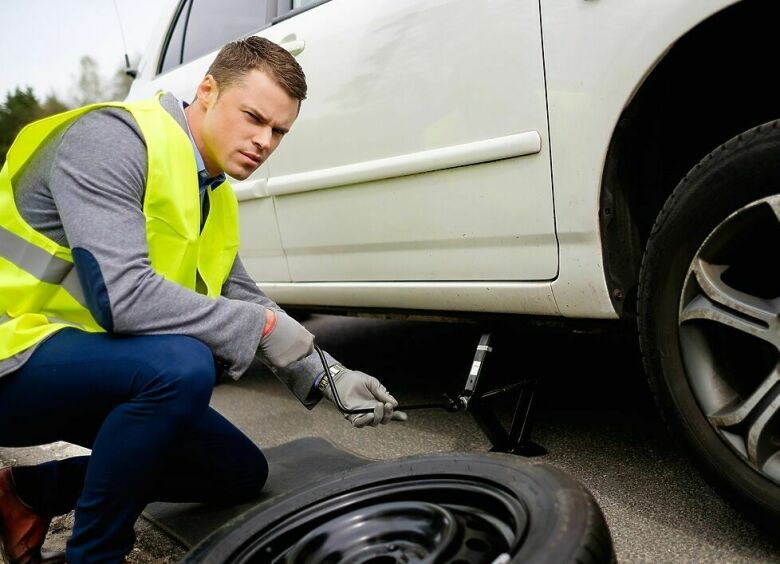

Как быстро и безопасно поменять колесо на дороге
Прокол или повреждение колеса – ситуация, с которой может столкнуться каждый водитель. Чтобы не тратить лишнее время и сохранить безопасность, важно знать правильный порядок действий. В этой статье рассмотрим, как быстро и безопасно поменять колесо прямо на дороге.
Что нужно для замены?
- Запасное колесо (или «докатка»)
- Домкрат
- Баллонный ключ
- Фара или фонарик (если тёмное время суток)
- Знак аварийной остановки
- Перчатки для удобства
Пошаговая инструкция
1. Обеспечьте безопасность
Включите аварийку, установите знак аварийной остановки на расстоянии не менее 30 метров (а на трассе – 100 метров).
Поставьте автомобиль на ручной тормоз.
2. Подготовьте автомобиль
Если возможно, выберите ровное и безопасное место для остановки.
Подложите под колёса противооткатные упоры или камни, чтобы машина не покатилась.
3. Ослабьте болты
Баллонным ключом слегка ослабьте болты на колесе, пока машина стоит на земле.
Не откручивайте полностью!
4. Поднимите автомобиль
Установите домкрат в правильную точку (обычно отмечено на пороге) и поднимите машину так, чтобы колесо оторвалось от земли.
5. Снимите повреждённое колесо
Полностью открутите болты, аккуратно снимите колесо и положите его набок, чтобы оно не укатилось.
6. Установите запаску
Поставьте новое колесо, совместите отверстия и наживите болты вручную.
7. Опустите автомобиль
Медленно опустите домкрат и окончательно затяните болты крест-накрест для равномерной фиксации.
Советы для безопасности
- Не меняйте колесо на повороте или в зоне плохой видимости.
- При возможности используйте светоотражающий жилет.
- Регулярно проверяйте давление в запаске.
Заключение
Зная правильный порядок действий, замена колеса на дороге займёт у вас не более 15–20 минут. Главное – соблюдать технику безопасности и всегда возить с собой исправный инструмент и запасное колесо.